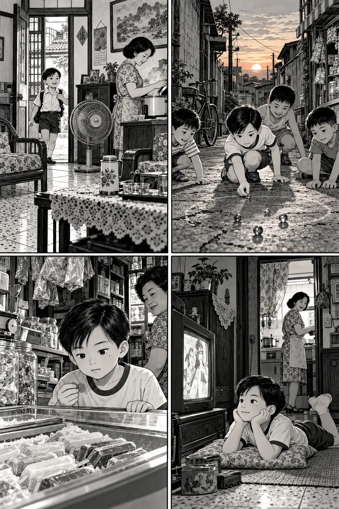
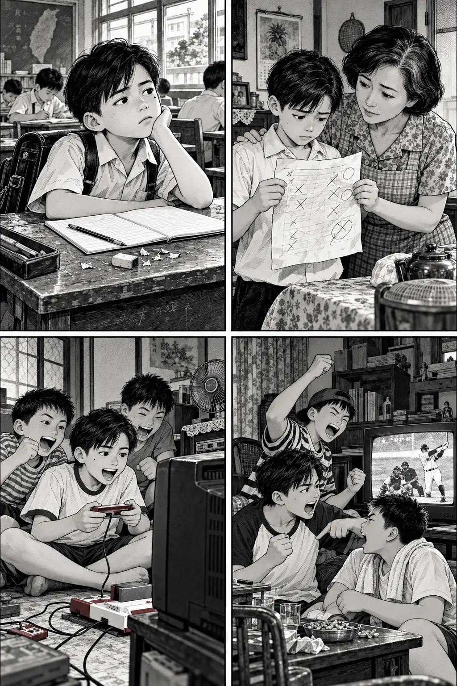
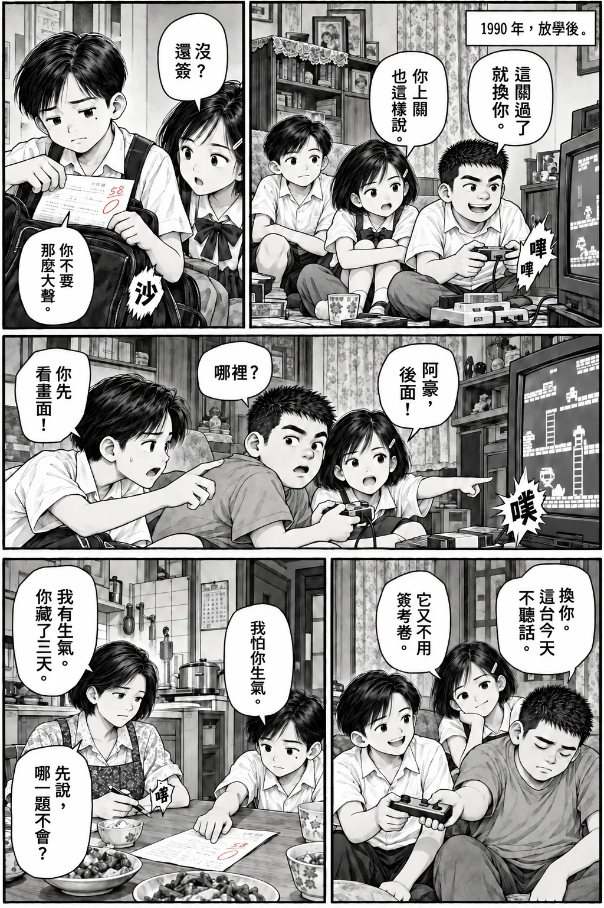
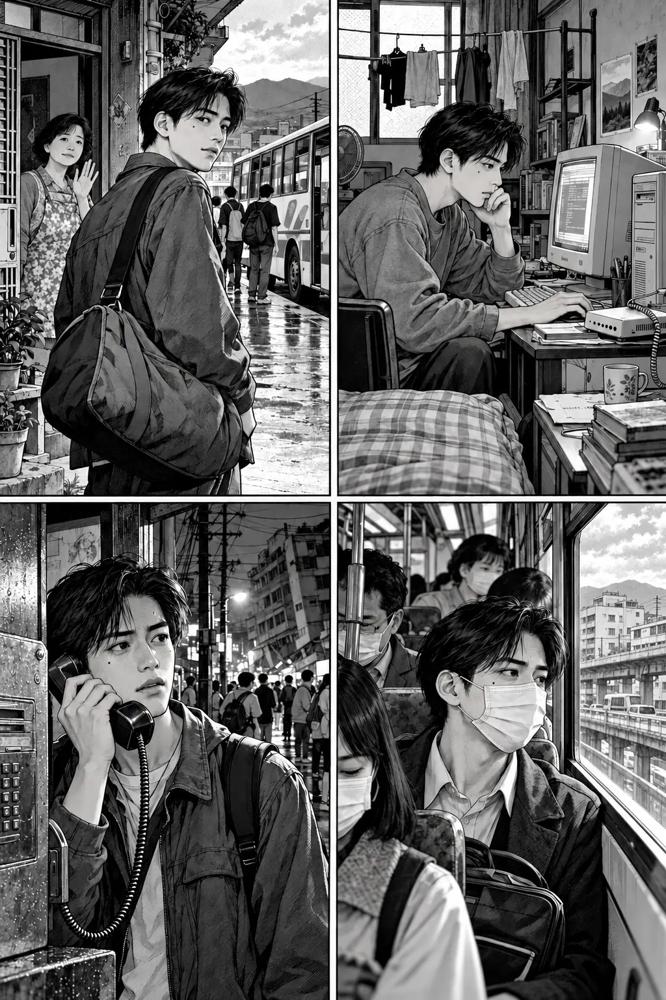
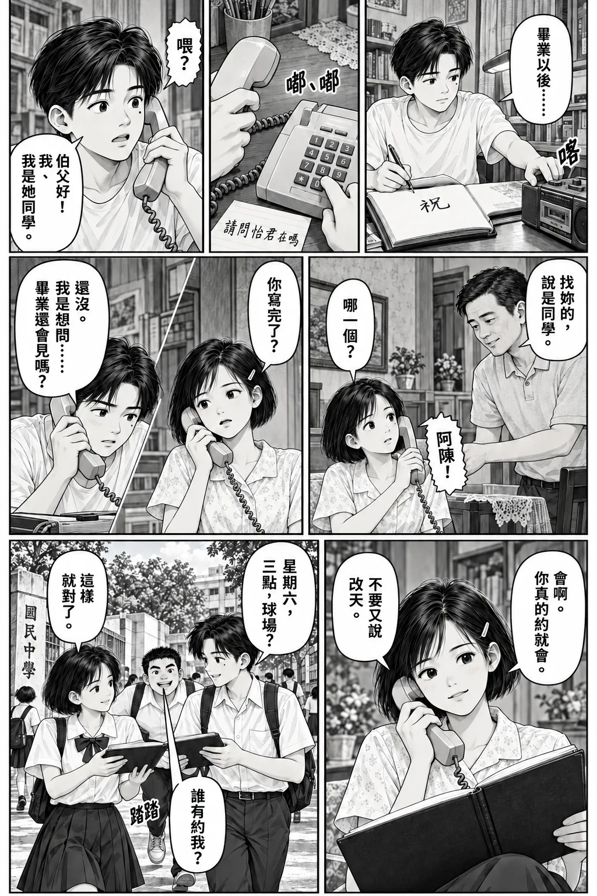
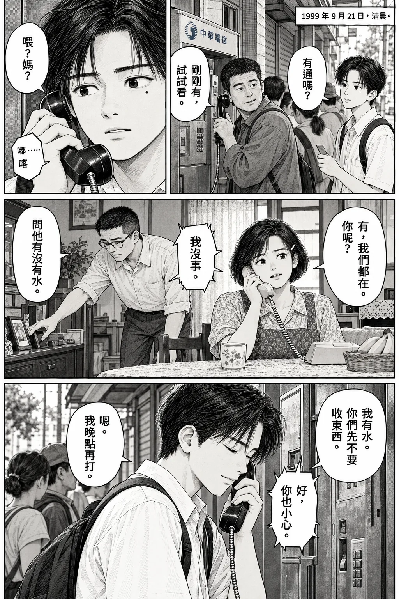
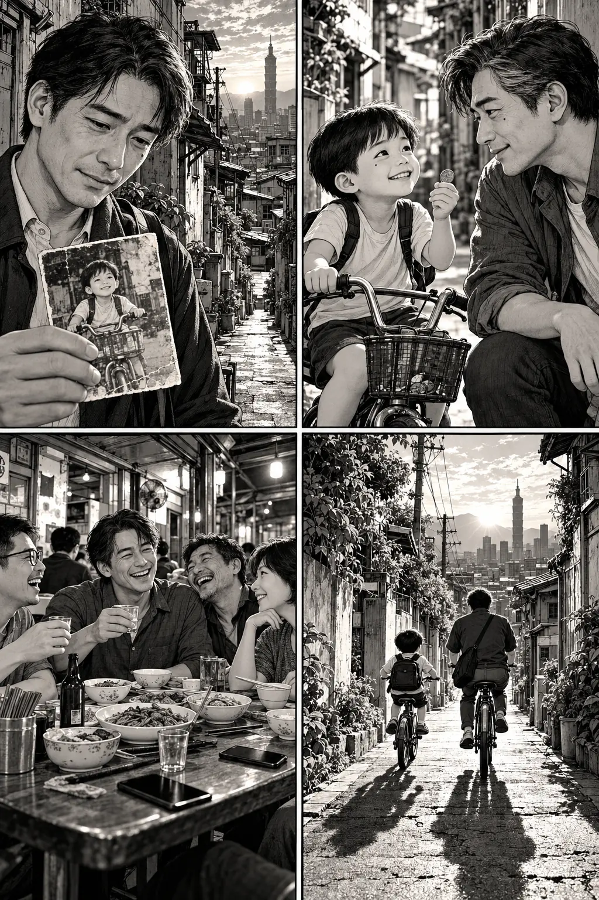

我們這一屆，
他叫阿陳，1980 年出生在台灣。故事從一條巷子出發，走過書包、畢業、第一份薪水，走到開始放慢腳步的年紀。這不是每個人的人生，卻也許有幾格，剛好畫到了你。
選一段時光 · 八個章節
閱讀順序：左上 → 右上 → 左下 → 右下。每格旁白在圖下，也可以點圖放大。
天黑就是回家的時間

CHAPTER 01 · 世代的切片
小時候，世界小到一間雜貨店就裝得下整個下午。
- 1 · 左上
電鍋跳起來，媽媽喊吃飯。那時候以為，大人會一直是大人。
- 2 · 右上
「阿陳！出來玩！」朋友在巷口喊，一個下午就這樣開始。
- 3 · 左下
兩個銅板握得發熱。買冰，還是留給明天？
- 4 · 右下
「卡通開始了！」他跑回電視前，以為自己會一直是小孩。
書包很重，快樂很便宜

CHAPTER 02 · 世代的切片
我們的寶物，藏在課桌抽屜與朋友家的電視前。
- 1 · 左上
鉛筆屑、生字簿、沉沉的書包。人在教室，心已經飛到放學以後。
- 2 · 右上
「這張……要簽名。」媽媽接過去，他先低下頭。
- 3 · 左下
「這關過了就換你！」沒輪到的人，喊得最大聲。
- 4 · 右下
一場球可以吵到隔天，一個下課也可以快樂很久。
沒說出口的夏天

CHAPTER 03 · 世代的切片
第一次喜歡一個人，連撥電話都得先練習。
- 1 · 左上
桌上是考卷，收音機裡是等了整晚的歌。
- 2 · 右上
球場上的每一球，都讓我們相信自己還可以更厲害一點。
- 3 · 左下
「伯父好，請問……她在嗎？」這句話，已經練了三次。
- 4 · 右下
畢業紀念冊上寫了祝福，最想說的那句卻留在心裡。
離開家，才懂得想家

CHAPTER 04 · 世代的切片
有人去念書，有人早早工作。我們從同一條巷子，走向不同的地方。
- 1 · 左上
媽媽說：「到了打電話。」他答得很快，以為離家很簡單。
- 2 · 右上
房租、洗衣、晚餐，原來每一件小事都要自己想。
- 3 · 左下
九二一之後，電話那頭一句「家裡沒事」，讓他終於吐出一口氣。
- 4 · 右下
SARS 那年，隔著口罩走進人群，才知道平常日子多值得珍惜。
第一份薪水

CHAPTER 05 · 世代的切片
那筆錢不算多，卻有了一點點大人的重量。
- 1 · 左上
薪水入帳，他把存摺看了兩遍。
- 2 · 右上
「今天我請。」父母仍想點最便宜的，他又加了一道菜。
- 3 · 左下
下班很累，還是開電腦，看看那個人有沒有上線。
- 4 · 右下
金融危機那年，「穩定」成了想抓住的東西。朋友遞來飲料：「先吃飯吧。」
改天吃飯
CHAPTER 06 · 世代的切片
以前問要去哪，後來問哪一天可以。
- 1 · 左上
群組裡約了又改的晚餐，一拖就是好幾個月。
- 2 · 右上
終於坐下來，才發現大家都有沒說完的近況。
- 3 · 左下
照片多了，合照卻少了。有些名字，已經很久沒見。
- 4 · 右下
陪媽媽走市場，他放慢腳步：「不用急，我陪你慢慢走。」
沒事就好

CHAPTER 07 · 世代的切片
四十歲以後，平安不再只是一句客套話。
- 1 · 左上
疫情裡，有人能在家，有人仍得出門。牽掛的人，都在電話那一端。
- 2 · 右上
四十六歲再打一場球，膝蓋隔天先來報到。
- 3 · 左下
深夜手機一響，他先看時間，再看是不是家裡。
- 4 · 右下
普通的一頓飯，熟悉的一句「再添一碗」，如今都捨不得匆忙。
男孩沒有不見

CHAPTER 08 · 世代的切片
如果能回去一天，我想先停下來，跟那個男孩說幾句話。
- 1 · 左上
巷子變了，夕陽照進來的角度，好像還是一樣。
- 2 · 右上
「別太急著當大人。你以後，有很長的時間要當大人。」
- 3 · 左下
「有空多見朋友。那句改天，真的可能等很久。」
- 4 · 右下
你沒有變成想像中那麼厲害的人，也沒關係。那個男孩沒有不見，只是跟我們一起長大。
那個男孩沒有不見，
只是跟我們一起長大。
關於這本漫畫
改編自使用者提供的〈我們這一屆，1980〉，以八個章節重新繪製成日本漫畫風黑白篇，運用墨線與網點呈現台灣的日常記憶。阿陳為虛構的世代合成人物；人物、對話與場景是創作，不是個人傳記、訪談紀錄，也不代表所有台灣人的共同經驗。
畫面由 AI 全新生成，以黑白墨線與網點為主，局部少量點色。旁白採獨立的繁體中文文字，方便手機閱讀與輔助工具使用。年代用來交代故事脈絡；服裝、器物及街景屬藝術化重現，不作歷史考證依據。九二一、SARS、金融危機及疫情為時代背景，個人情節均為虛構。
圖片採高壓縮 WebP；手機可載入較小尺寸，後續章節延後載入。本站不使用追蹤器、廣告、外部字型或分析工具。